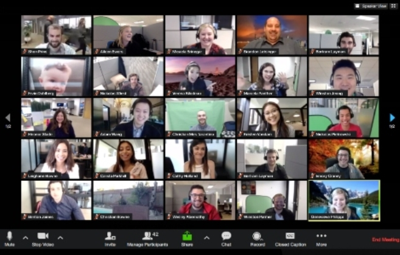

Las capacitaciones online consisten en encuentros virtuales donde podras elegir trabajar de forma grupal
o individual, enfocadas en las post-produccion/edicion online
Los encuentros estan destinados a analizar material teorico, practico y ediciones de fotografias.

PRESENCIAL
Mis capacitaciones están dirigidas a fotógrafos de familia que buscan ganar seguridad, confianza y
lograr una técnica y estilos definidos. Fotógrafos apasionados en búsqueda de retratar la autenticidad,
espontaneidad y naturalidad en los niños, o la paz, sencillez y armonía de un recién nacido en sus
primeros días.